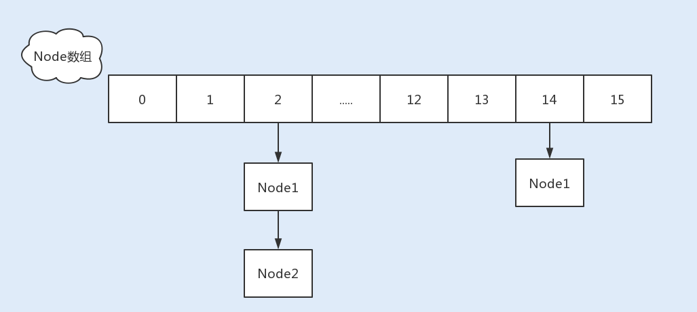
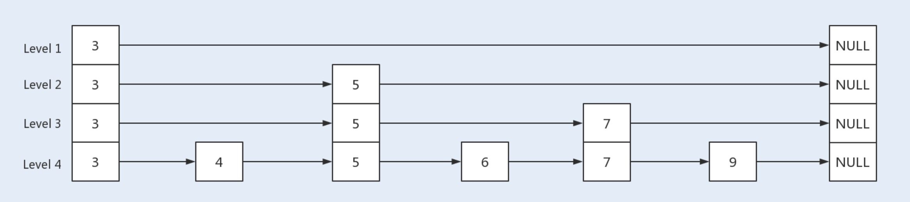
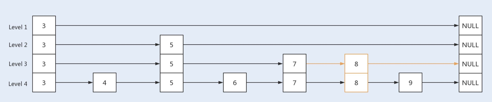
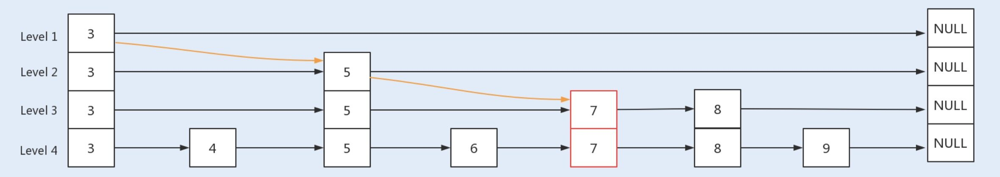
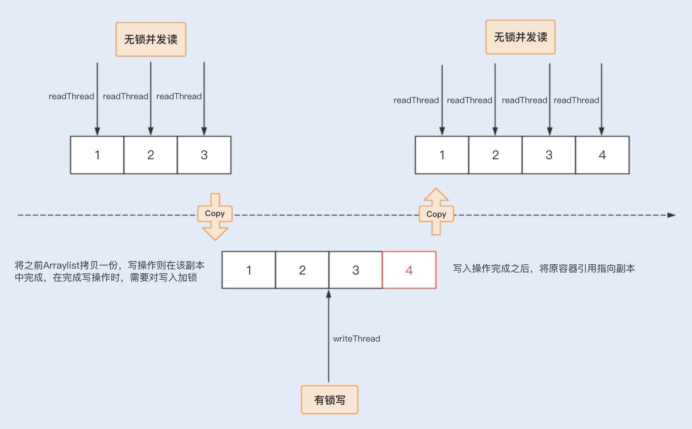
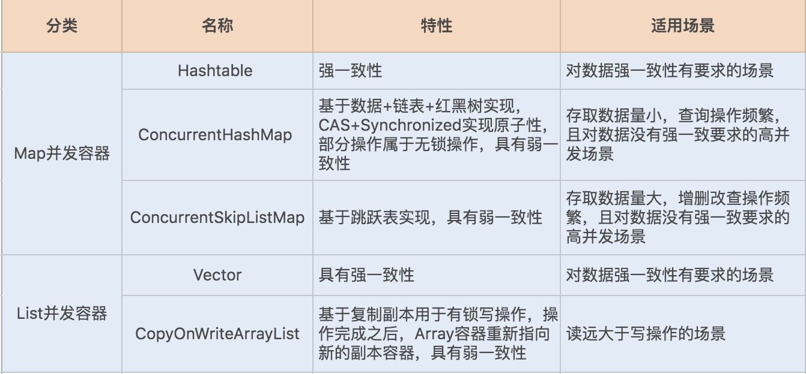

- 00 开篇词你为什么需要学习并发编程？.md.html
- 01 如何制定性能调优标准？.md.html
- 02 如何制定性能调优策略？.md.html
- 03 字符串性能优化不容小觑，百M内存轻松存储几十G数据.md.html
- 04 慎重使用正则表达式.md.html
- 05 ArrayList还是LinkedList？使用不当性能差千倍.md.html
- 06 Stream如何提高遍历集合效率？.md.html
- 07 深入浅出HashMap的设计与优化.md.html
- 08 网络通信优化之IO模型：如何解决高并发下IO瓶颈？.md.html
- 09 网络通信优化之序列化：避免使用Java序列化.md.html
- 10 网络通信优化之通信协议：如何优化RPC网络通信？.md.html
- 11 答疑课堂：深入了解NIO的优化实现原理.md.html
- 12 多线程之锁优化（上）：深入了解Synchronized同步锁的优化方法.md.html
- 13 多线程之锁优化（中）：深入了解Lock同步锁的优化方法.md.html
- 14 多线程之锁优化（下）：使用乐观锁优化并行操作.md.html
- 15 多线程调优（上）：哪些操作导致了上下文切换？.md.html
- 16 多线程调优（下）：如何优化多线程上下文切换？.md.html
- 17 并发容器的使用：识别不同场景下最优容器.md.html
- 18 如何设置线程池大小？.md.html
- 19 如何用协程来优化多线程业务？.md.html
- 20 磨刀不误砍柴工：欲知JVM调优先了解JVM内存模型.md.html
- 21 深入JVM即时编译器JIT，优化Java编译.md.html
- 22 如何优化垃圾回收机制？.md.html
- 23 如何优化JVM内存分配？.md.html
- 24 内存持续上升，我该如何排查问题？.md.html
- 25 答疑课堂：模块四热点问题解答.md.html
- 26 单例模式：如何创建单一对象优化系统性能？.md.html
- 27 原型模式与享元模式：提升系统性能的利器.md.html
- 28 如何使用设计模式优化并发编程？.md.html
- 29 生产者消费者模式：电商库存设计优化.md.html
- 30 装饰器模式：如何优化电商系统中复杂的商品价格策略？.md.html
- 31 答疑课堂：模块五思考题集锦.md.html
- 32 MySQL调优之SQL语句：如何写出高性能SQL语句？.md.html
- 33 MySQL调优之事务：高并发场景下的数据库事务调优.md.html
- 34 MySQL调优之索引：索引的失效与优化.md.html
- 35 记一次线上SQL死锁事故：如何避免死锁？.md.html
- 36 什么时候需要分表分库？.md.html
- 37 电商系统表设计优化案例分析.md.html
- 38 数据库参数设置优化，失之毫厘差之千里.md.html
- 39 答疑课堂：MySQL中InnoDB的知识点串讲.md.html
- 41 如何设计更优的分布式锁？.md.html
- 42 电商系统的分布式事务调优.md.html
- 43 如何使用缓存优化系统性能？.md.html
- 44 记一次双十一抢购性能瓶颈调优.md.html
- 加餐 什么是数据的强、弱一致性？.md.html
- 加餐 推荐几款常用的性能测试工具.md.html
- 答疑课堂：模块三热点问题解答.md.html
- 结束语 栉风沐雨，砥砺前行！.md.html
17 并发容器的使用：识别不同场景下最优容器
你好，我是刘超。
在并发编程中，我们经常会用到容器。今天我要和你分享的话题就是：在不同场景下我们该如何选择最优容器。
并发场景下的 Map 容器
假设我们现在要给一个电商系统设计一个简单的统计商品销量 TOP 10 的功能。常规情况下，我们是用一个哈希表来存储商品和销量键值对，然后使用排序获得销量前十的商品。在这里，哈希表是实现该功能的关键。那么请思考一下，如果要你设计这个功能，你会使用哪个容器呢？
在 07 讲中，我曾详细讲过 HashMap 的实现原理，以及 HashMap 结构的各个优化细节。我说过 HashMap 的性能优越，经常被用来存储键值对。那么这里我们可以使用 HashMap 吗？
答案是不可以，我们切忌在并发场景下使用 HashMap。因为在 JDK1.7 之前，在并发场景下使用 HashMap 会出现死循环，从而导致 CPU 使用率居高不下，而扩容是导致死循环的主要原因。虽然 Java 在 JDK1.8 中修复了 HashMap 扩容导致的死循环问题，但在高并发场景下，依然会有数据丢失以及不准确的情况出现。
这时为了保证容器的线程安全，Java 实现了 Hashtable、ConcurrentHashMap 以及 ConcurrentSkipListMap 等 Map 容器。
Hashtable、ConcurrentHashMap 是基于 HashMap 实现的，对于小数据量的存取比较有优势。
ConcurrentSkipListMap 是基于 TreeMap 的设计原理实现的，略有不同的是前者基于跳表实现，后者基于红黑树实现，ConcurrentSkipListMap 的特点是存取平均时间复杂度是 O（log（n）），适用于大数据量存取的场景，最常见的是基于跳跃表实现的数据量比较大的缓存。
回归到开始的案例再看一下，如果这个电商系统的商品总量不是特别大的话，我们可以用 Hashtable 或 ConcurrentHashMap 来实现哈希表的功能。
Hashtable 🆚 ConcurrentHashMap
更精准的话，我们可以进一步对比看看以上两种容器。
在数据不断地写入和删除，且不存在数据量累积以及数据排序的场景下，我们可以选用 Hashtable 或 ConcurrentHashMap。
Hashtable 使用 Synchronized 同步锁修饰了 put、get、remove 等方法，因此在高并发场景下，读写操作都会存在大量锁竞争，给系统带来性能开销。
相比 Hashtable，ConcurrentHashMap 在保证线程安全的基础上兼具了更好的并发性能。在 JDK1.7 中，ConcurrentHashMap 就使用了分段锁 Segment 减小了锁粒度，最终优化了锁的并发操作。
到了 JDK1.8，ConcurrentHashMap 做了大量的改动，摒弃了 Segment 的概念。由于 Synchronized 锁在 Java6 之后的性能已经得到了很大的提升，所以在 JDK1.8 中，Java 重新启用了 Synchronized 同步锁，通过 Synchronized 实现 HashEntry 作为锁粒度。这种改动将数据结构变得更加简单了，操作也更加清晰流畅。
与 JDK1.7 的 put 方法一样，JDK1.8 在添加元素时，在没有哈希冲突的情况下，会使用 CAS 进行添加元素操作；如果有冲突，则通过 Synchronized 将链表锁定，再执行接下来的操作。

综上所述，我们在设计销量 TOP10 功能时，首选 ConcurrentHashMap。
但要注意一点，虽然 ConcurrentHashMap 的整体性能要优于 Hashtable，但在某些场景中，ConcurrentHashMap 依然不能代替 Hashtable。例如，在强一致的场景中 ConcurrentHashMap 就不适用，原因是 ConcurrentHashMap 中的 get、size 等方法没有用到锁，ConcurrentHashMap 是弱一致性的，因此有可能会导致某次读无法马上获取到写入的数据。
ConcurrentHashMap 🆚 ConcurrentSkipListMap
我们再看一个案例，我上家公司的操作系统中有这样一个功能，提醒用户手机卡实时流量不足。主要的流程是服务端先通过虚拟运营商同步用户实时流量，再通过手机端定时触发查询功能，如果流量不足，就弹出系统通知。
该功能的特点是用户量大，并发量高，写入多于查询操作。这时我们就需要设计一个缓存，用来存放这些用户以及对应的流量键值对信息。那么假设让你来实现一个简单的缓存，你会怎么设计呢？
你可能会考虑使用 ConcurrentHashMap 容器，但我在 07 讲中说过，该容器在数据量比较大的时候，链表会转换为红黑树。红黑树在并发情况下，删除和插入过程中有个平衡的过程，会牵涉到大量节点，因此竞争锁资源的代价相对比较高。
而跳跃表的操作针对局部，需要锁住的节点少，因此在并发场景下的性能会更好一些。你可能会问了，在非线程安全的 Map 容器中，我并没有看到基于跳跃表实现的 SkipListMap 呀？这是因为在非线程安全的 Map 容器中，基于红黑树实现的 TreeMap 在单线程中的性能表现得并不比跳跃表差。
因此就实现了在非线程安全的 Map 容器中，用 TreeMap 容器来存取大数据；在线程安全的 Map 容器中，用 SkipListMap 容器来存取大数据。
那么 ConcurrentSkipListMap 是如何使用跳跃表来提升容器存取大数据的性能呢？我们先来了解下跳跃表的实现原理。
什么是跳跃表
跳跃表是基于链表扩展实现的一种特殊链表，类似于树的实现，跳跃表不仅实现了横向链表，还实现了垂直方向的分层索引。
一个跳跃表由若干层链表组成，每一层都实现了一个有序链表索引，只有最底层包含了所有数据，每一层由下往上依次通过一个指针指向上层相同值的元素，每层数据依次减少，等到了最顶层就只会保留部分数据了。
跳跃表的这种结构，是利用了空间换时间的方法来提高了查询效率。程序总是从最顶层开始查询访问，通过判断元素值来缩小查询范围。我们可以通过以下几张图来了解下跳跃表的具体实现原理。
首先是一个初始化的跳跃表：

当查询 key 值为 9 的节点时，此时查询路径为：

当新增一个 key 值为 8 的节点时，首先新增一个节点到最底层的链表中，根据概率算出 level 值，再根据 level 值新建索引层，最后链接索引层的新节点。新增节点和链接索引都是基于 CAS 操作实现。

当删除一个 key 值为 7 的结点时，首先找到待删除结点，将其 value 值设置为 null；之后再向待删除结点的 next 位置新增一个标记结点，以便减少并发冲突；然后让待删结点的前驱节点直接越过本身指向的待删结点，直接指向后继结点，中间要被删除的结点最终将会被 JVM 垃圾回收处理掉；最后判断此次删除后是否导致某一索引层没有其它节点了，并视情况删除该层索引 。

通过以上两个案例，我想你应该清楚了 Hashtable、ConcurrentHashMap 以及 ConcurrentSkipListMap 这三种容器的适用场景了。
如果对数据有强一致要求，则需使用 Hashtable；在大部分场景通常都是弱一致性的情况下，使用 ConcurrentHashMap 即可；如果数据量在千万级别，且存在大量增删改操作，则可以考虑使用 ConcurrentSkipListMap。
并发场景下的 List 容器
下面我们再来看一个实际生产环境中的案例。在大部分互联网产品中，都会设置一份黑名单。例如，在电商系统中，系统可能会将一些频繁参与抢购却放弃付款的用户放入到黑名单列表。想想这个时候你又会使用哪个容器呢？
首先用户黑名单的数据量并不会很大，但在抢购中需要查询该容器，快速获取到该用户是否存在于黑名单中。其次用户 ID 是整数类型，因此我们可以考虑使用数组来存储。那么 ArrayList 是否是你第一时间想到的呢？
我讲过 ArrayList 是非线程安全容器，在并发场景下使用很可能会导致线程安全问题。这时，我们就可以考虑使用 Java 在并发编程中提供的线程安全数组，包括 Vector 和 CopyOnWriteArrayList。
Vector 也是基于 Synchronized 同步锁实现的线程安全，Synchronized 关键字几乎修饰了所有对外暴露的方法，所以在读远大于写的操作场景中，Vector 将会发生大量锁竞争，从而给系统带来性能开销。
相比之下，CopyOnWriteArrayList 是 java.util.concurrent 包提供的方法，它实现了读操作无锁，写操作则通过操作底层数组的新副本来实现，是一种读写分离的并发策略。我们可以通过以下图示来了解下 CopyOnWriteArrayList 的具体实现原理。

回到案例中，我们知道黑名单是一个读远大于写的操作业务，我们可以固定在某一个业务比较空闲的时间点来更新名单。
这种场景对写入数据的实时获取并没有要求，因此我们只需要保证最终能获取到写入数组中的用户 ID 就可以了，而 CopyOnWriteArrayList 这种并发数组容器无疑是最适合这类场景的了。
总结
在并发编程中，我们经常会使用容器来存储数据或对象。Java 在 JDK1.1 到 JDK1.8 这个漫长的发展过程中，依据场景的变化实现了同类型的多种容器。我将今天的主要内容为你总结了一张表格，希望能对你有所帮助，也欢迎留言补充。

思考题
在抢购类系统中，我们经常会使用队列来实现抢购的排队等待，如果要你来选择或者设计一个队列，你会怎么考虑呢？